Comment le jeu joue une conversation : le script de CONV.PAK, les scènes de groupe,
le gros plan avec sa tête parlante, les yeux et la bouche, la question « Accept / Reject », puis la
voix de la version CD-ROM et les corrections à porter dans libRealSpace.
Toutes les images de cette page sont composées avec les données du jeu, selon les règles lues dans
le code (outil tools/conv_doc_images.py). La référence complète, avec les citations
d'assembleur, est analysis/CONV_SYSTEM.md.
241 scripts non vides
1 717CLOSEUP
86 scènes de groupe
62 images par visage
10 images de scène par seconde
1
Fichiers
Fichier
Rôle
GAMEFLOW\CONV.PAK
les scripts : une entrée du PAK = une conversation (256 entrées, 15 vides)
images et palettes des visages, figurants et décors
GAMEFLOW\OPTSHPS.PAK, OPTPALS.PAK
images et palettes partagées avec les menus (le ciel, par exemple)
GAMEFLOW\GAMEFLOW.IFF
escadres (WNGS / WING), lues par SELECT_WING
VOCLIST.IFF (CD)
liste des fichiers de voix : test de présence des voix et préchargement
f:<identifiant>.voc (CD)
une réplique parlée ; identifiant = la chaîne de voix du script
Lancement
Le script de partie lance une conversation par PLAY_CONV n (entrée n de
CONV.PAK), jouée par Gameflow_PlayConversation_4AAAB →
Conv_Construct_59B67 → Conv_PlayScript_5AA4E. Le code en lance aussi
quatre lui-même :
254 si les avions perdus au total dépassent 16 (« The insurance company has dropped our policy ») ;
255 si l'argent devient négatif (Gameflow_CheckLossConversations_50645) ;
252 ou 253 par PLANES_LOST_CONV, si des avions ont été perdus pendant la mission.
CONVDATA.IFF
FORM BACK : INFO = nom (8 octets) ; DATA = suite d'éléments de 5 octets, dessinés dans l'ordre :
octet source (0 = CONVSHPS / CONVPALS, 1 = OPTSHPS / OPTPALS), octet image, octet palette,
mot signé = position verticale de l'élément.
FORM FACE, FIGR, PFIG, FCPL, FGPL : nom (8 octets) + un octet, numéro d'image ou de palette.
2
Format d'un script
Une suite de commandes. Chaque commande = 1 octet, puis ses champs. Entiers petit-boutistes.
« nom » = 9 octets complétés par des 0 ; « chaîne » = texte terminé par un 0.
Deux formats. Le format CD (données de BIGTRE.TRE) a, devant chaque texte,
une chaîne de plus : l'identifiant de voix (3gw009, 1ai021… ; chaîne vide quand
la réplique n'a pas de voix). Le format disquette ne l'a pas. Le reste est identique. Les tableaux
notent ce champ [voix].
Commandes de premier niveau
Valeur
Nom
Rôle
Champs
0
GROUP_SHOT
scène de groupe
nom du décor, puis ses sous-commandes
3
CLOSEUP
réplique en gros plan
voir ci-dessous, puis ses sous-commandes
10
SHOW_TEXT
texte seul (CD seulement à ce niveau)
octet couleur, [voix], chaîne
12
YESNOCHOICE_BRANCH2
saut
mot : octets sautés, comptés depuis la fin du mot
14
SELECT_WING*
escadre
octet écran, octet escadre
15
CHOOSE_WINGMAN
choix d'un équipier
aucun
16
NOP_16*
rien (disquette)
aucun
18
NOP_18*
rien (CD)
aucun
* nom proposé (SELECT_WING s'appelle UNKNOWN dans libRealSpace).
Sous-commandes, lues par la commande qui les précède
Valeur
Nom
Lue par
Champs
1
GROUP_SHOT_ADD_CHARACTER
GROUP_SHOT
nom de figure, x (mot signé), y (mot signé)
2
GROUP_SHOT_CHARACTER_TALK
GROUP_SHOT
nom de figure, x, y, octet couleur, [voix], chaîne
4
CLOSEUP_CONTINUATION
CLOSEUP
[voix], chaîne
10
SHOW_TEXT
GROUP_SHOT et CLOSEUP
octet couleur, [voix], chaîne
11
YESNOCHOICE_BRANCH1
CLOSEUP
mot : octets sautés si le joueur refuse
Champs de CLOSEUP
Champ
Taille
Rôle
visage
9
FORM FACE de CONVDATA.IFF
image
1
image de base de la tête (yeux, sourcils ou expression) ; 255 = aucune
décor
9
FORM BACK de CONVDATA.IFF
x
2
position de la tête (130, 160 ou 190 dans les données), mot signé
y
2
position de la tête (128 dans les données), mot signé
[voix]
chaîne
identifiant de voix (format CD)
texte
chaîne
sous-titre, et texte lu par les lèvres
couleur
1
couleur du texte
Grammaire
script := commande*
commande := GROUP_SHOT décor figurant* réplique*
| CLOSEUP gros_plan suite*
| SHOW_TEXT couleur texte (CD)
| YESNOCHOICE_BRANCH2 mot
| SELECT_WING octet octet
| CHOOSE_WINGMAN | NOP_16 | NOP_18
figurant := GROUP_SHOT_ADD_CHARACTER nom x y
réplique := GROUP_SHOT_CHARACTER_TALK nom x y couleur texte
| SHOW_TEXT couleur texte
gros_plan := visage image décor x y texte couleur
suite := CLOSEUP_CONTINUATION texte
| SHOW_TEXT couleur texte
| YESNOCHOICE_BRANCH1 mot
texte := [voix] chaîne
Exemple : proposition de mission (entrée 62)
Farnsworth propose le contrat ; YESNOCHOICE_BRANCH1 pose la question. Si le joueur refuse,
le curseur saute la branche « accepter ».
CLOSEUP far, image 22, mp1_cu « Eight million dollars, with bonuses. Do you accept? »
YESNOCHOICE_BRANCH1 159 refus : saute 159 octets
CLOSEUP far, image 255, mp1_cu « Good. I'll contact Virgil to close later. Watch your back... »
CLOSEUP far, image 14, mp1_cu « ...it's dangerous out there. »
YESNOCHOICE_BRANCH2 78 fin de la branche « accepter » : saute 78 octets
CLOSEUP far, image 25, mp1_cu « All right, but I'd reconsider, if I were you. »
Les 52 sauts des données tombent tous sur le début d'une commande. La réponse est rangée pour la
partie ; le script de partie choisit la suite par IF_MISSION_ACCEPTED et
IF_MISSION_REFUSED.
3
Scène de groupe (GROUP_SHOT)
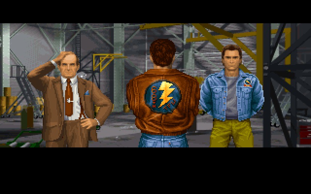
Entrée 12, première scène : décor han_int, puis les figurants
virgil1 (70, 43), miguel1 (210, 22) et air3 (130, 16), dans l'ordre du script.
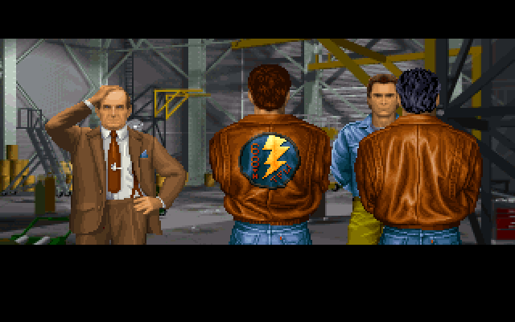
Entrée 12, deuxième scène : même décor, stern2 ajouté en (220, 18),
dessiné après les autres, donc devant.
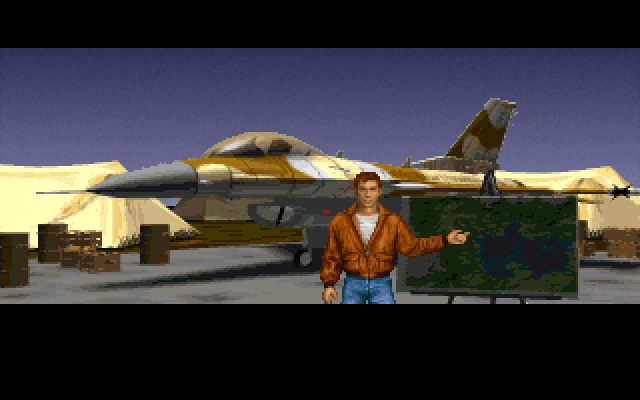
Entrée 59 : décor s_brief et un personnage qui parle,
airwing1 en (0, −20) : x et y sont des mots signés.
Où l'on dessine
Dans une image hors écran de 320 × 200. Sa ligne 0 arrive à la ligne 24 de l'écran et seules
les lignes 0 à 127 sont visibles (écran 24 à 151) ; la bande du bas (152 à 199) reçoit le texte. Une
position (x, y) du script est donc à l'écran en (x, y + 24), l'image gardant ses propres décalages.
Ordre de dessin
les éléments du décor, dans l'ordre du BACK, chacun en (0, y) ;
les figurants (GROUP_SHOT_ADD_CHARACTER), image 0, dans l'ordre du script ;
les personnages qui parlent (GROUP_SHOT_CHARACTER_TALK), image 0 puis la bouche pendant leur réplique.
Chaque image recouvre les précédentes là où ses segments de ligne passent (pas de XOR, pas de
couleur transparente) : c'est l'ordre du script qui décide qui est devant.
Palette (une seule pour la scène)
la palette de chaque élément du décor ;
FGPL « normal » (CONVPALS 48) ;
la palette PFIG du premier figurant seulement ; sans figurant, rien de plus.
Durées (disquette)
la scène tourne à 10 images par seconde ;
GROUP_SHOT_CHARACTER_TALK : une image par caractère du texte, sans attente après ;
SHOW_TEXT dans la scène : 40 images ;
une touche passe à la réplique suivante.
Bouche d'un personnage qui parle
Un caractère par image, sans règle de prononciation ni clignement. Bouche = chiffre de
« 04302500000340143000353000 » + 1 pour les lettres a à z, aucune pour le reste. Images de bouche 1 à 6 :
a
b
c
d
e
f
g
h
i
j
k
l
m
n
o
p
q
r
s
t
u
v
w
x
y
z
1
5
4
1
3
6
1
1
1
1
1
4
5
1
2
5
4
1
1
1
4
6
4
1
1
1
Figures à 7 images (air1, stern1, airwing1…) : image 0 = corps,
1 à 6 = bouches. Les figures à 1 image (air3, stern2, virgil1…) ne
peuvent servir que de figurants.
4
Gros plan (CLOSEUP)
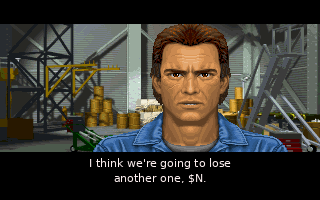
Entrée 12 : CLOSEUP miguel, image 25, décor ha1_cu, x = 190,
y = 128. Une lecture du texte par image (10 par seconde), puis 40 images d'attente.
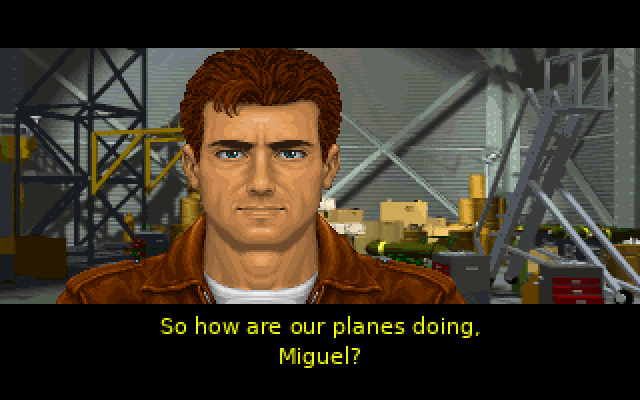
Entrée 12 : CLOSEUP air, image 255 (aucune image de base), décor
ha1_cu, x = 130.
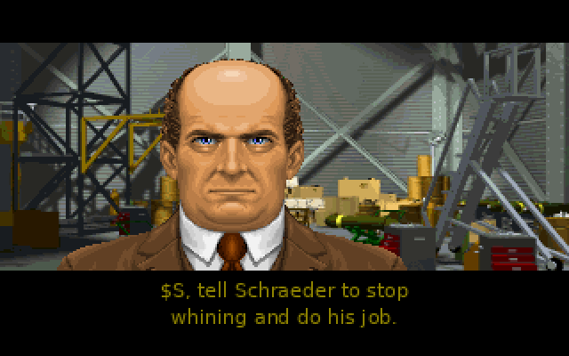
Entrée 12 : virgil, image 31 (expression qui couvre les yeux et la bouche).
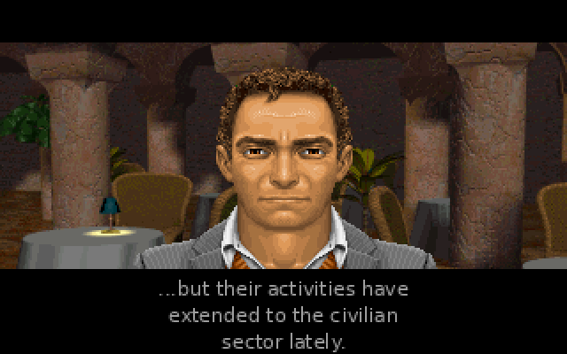
Entrée 62 : far, image 14, décor mp1_cu, x = 160.
Le texte de ces images est écrit avec une police quelconque, centré : la police
du jeu n'est pas reproduite et sa position horizontale n'a pas été lue. Lignes de 30 caractères au plus,
coupées aux espaces, à y = 156 + 15 × n sur l'écran.
Ordre de dessin, à la position de la commande
les éléments du décor (BACK) ;
image 0 du visage : la tête et le haut du corps ;
l'image des yeux : l'image de base (l'octet « image »), ou 12 pendant un clignement ; rien pour 255 ;
la bouche, rien si elle vaut −1 ;
image 1 : la coiffure ;
image 34 : les habits.
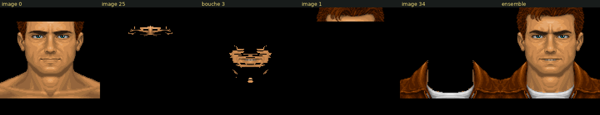
Visage air : chaque couche seule, puis l'ensemble. La coiffure (image 1) et les
habits (image 34) passent après la bouche et la recouvrent là où ils la touchent.
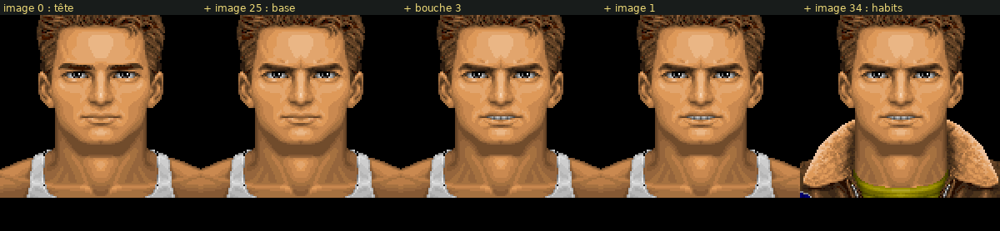
Visage billy, couches ajoutées une à une. Billy n'a pas d'image 1 (l'étape
ne change rien) : seuls air, janet, lyle, men,
pri, stern et tex en ont une.
Palette
Palettes du décor, puis FCPL « normal » (CONVPALS 46). Le seul appel vu demande
« normal » ; « night » n'est pas demandé en conversation.
Sous-commandes du gros plan
CLOSEUP_CONTINUATION : même visage, décor, couleur et image de base ; nouveau texte.
SHOW_TEXT : texte affiché 20 images, sans mouvement des lèvres.
Une image par lecture jusqu'à la fin du texte, puis 40 images (15 si le texte est vide). Une
touche coupe l'attente. La version CD a ses propres durées (§ 10).
5
Images d'un visage
Chaque FACE désigne une forme de CONVSHPS.PAK de 62 images. L'octet
« image » de CLOSEUP ne choisit que l'image de base : tête, coiffure et habits sont
fixes (images 0, 1 et 34).
Images
Contenu
0
la tête, avec le haut du corps
1
la coiffure (7 visages seulement)
2 à 11
les bouches
12
les yeux fermés (clignement)
13 à 21
les yeux : regards différents
22 à 25
sourcils et haut des yeux (25 froncés ; 23 moitié gauche, 24 moitié droite)
26
une bouche de plus
27 à 33
expressions qui couvrent les yeux et la bouche (27 sourire, 28 grand sourire, 31 sourcils et bouche…)
34
les habits, dessinés à chaque image
35, 36
d'autres habits (non dessinés en conversation)
37
lunettes de soleil (non dessinées en conversation)
38, 39, 51
casque, visière, détail de visière
53
l'image de la question « Accept / Reject »
59 à 61
trois expressions de far seulement
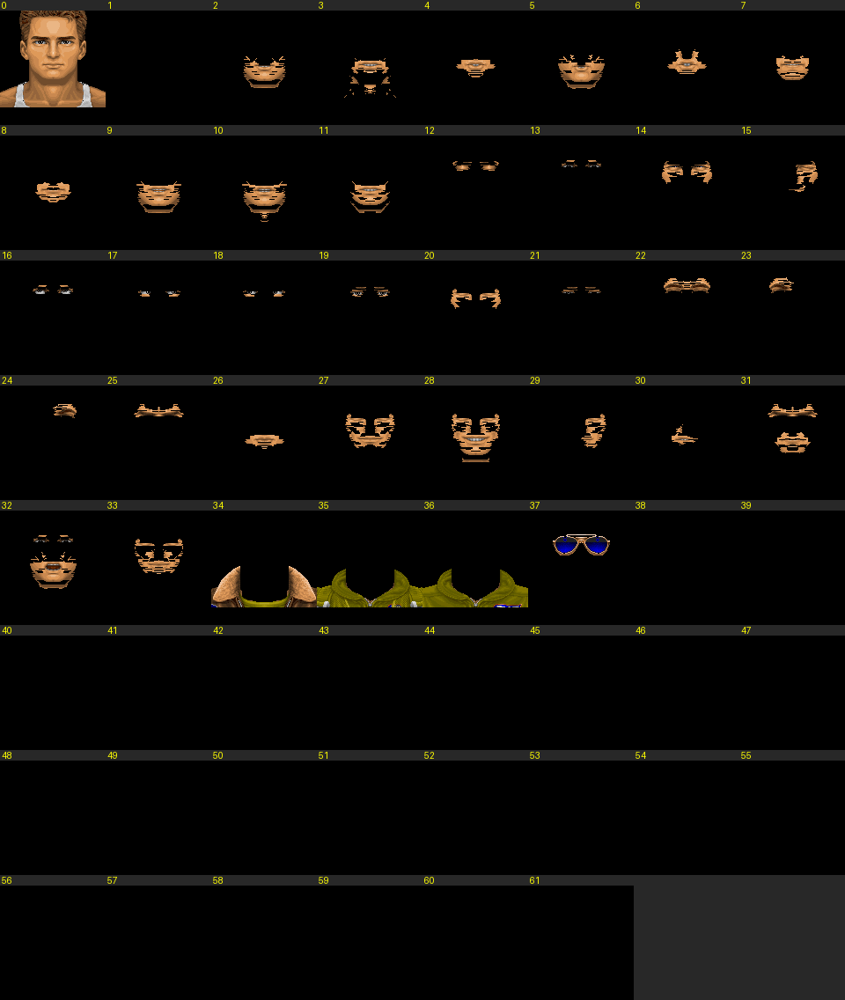
Les 62 images de billy, chacune seule, au même point d'origine. Les cases vides
sont des images vides pour ce visage.
Les valeurs employées par les scripts
Yeux (13 à 21), sourcils (22 à 25), trois expressions (27, 28, 31) et 255. Chaque image ci-dessous
est dessinée par-dessus la tête, avec la coiffure et les habits :
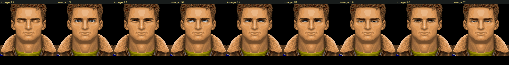
Image 12 (clignement) et les regards employés par les scripts : 13, 14, 16 à 21.
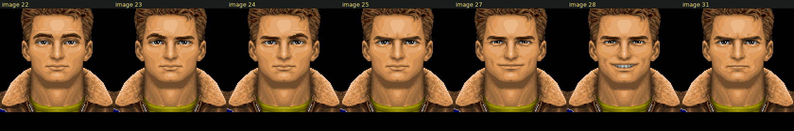
Sourcils 22 à 25 et expressions 27, 28, 31.
Visages incomplets
Les scripts emploient les mêmes valeurs pour tous les visages, mais cinq visages n'ont qu'une partie
des images. Pour une valeur dont l'image est vide, le jeu ne dessine rien de plus que la tête : le
visage reste neutre, comme avec 255.
Visage
Valeurs des scripts qui désignent une image vide
far
17, 18, 19, 21, 22, 25, 31
muh
19, 21, 22, 24, 25
tweedly
14, 22, 23, 25
beto
21, 22, 24, 27
janet, pri
23
men, walt
24
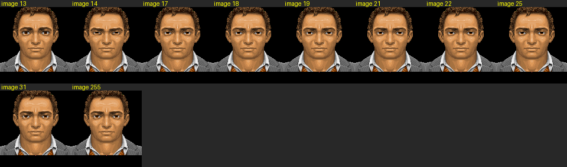
La composition du jeu pour chaque valeur « image » employée avec far : les
valeurs 17, 18, 19, 21, 22, 25 et 31 donnent le visage neutre. L'image 34 de far est vide :
son image 0 porte déjà les vêtements.6
Yeux et bouche du gros plan
Disquette : la bouche suit le texte, pas la voix. Le texte lu est celui du script tel quel
(codes $ non remplacés), mis en minuscules.
Clignement, tiré à chaque image de scène
image des yeux = 12 si rand() × 30 / 32768 = 0 (une fois sur 30)
= image de base sinon
si image de base > 20 : image des yeux = image de base (jamais de clignement)
Un clignement dure en général une image (0,1 s), en moyenne toutes les 3 s. Au-delà de 20, l'image
de base couvre les yeux, et l'image 12 l'effacerait. Dans les données, 774 répliques peuvent cligner
(13 à 20 ou 255), les autres ont les yeux fixes.
Bouche : une lecture par image
« e » + caractère qui n'est pas a..z : consommé aussi → pas de bouche
« e » + « r » → bouche 6, « r » consommé
« t » + « h » → bouche 9, « h » consommé
« c » + « h » → bouche 6, « h » consommé
« h » → caractère suivant consommé ; bouche de « h » (table)
autre a..z → bouche = table
autre caractère → pas de bouche
fin du texte → pas de bouche ; la réplique passe à l'attente
Virgil (entrée 12), une case par image de scène : 22 images pour 23 caractères.
« er » consomme deux caractères en une image ; l'espace (␣) et le point ne donnent pas de
bouche ; « e » suivi d'une lettre autre que « r » prend la bouche 3 de la table.7
far, image de base 53, plein écran : la tête et le dernier élément du décor
descendus de 24 lignes. Les libellés « Accept Mission » / « Reject Mission » ne sont pas dessinés ici.
Visage : image de base fixée à 53 (elle remplace l'image des yeux) ; texte de lèvres
vide, donc bouche fermée ; pas de clignement (53 > 20).
Ouverture : la scène passe en plein écran (0, 0)-(319, 199) ; les bandes noires s'ouvrent
en 24 pas (haut : une ligne par pas, bas : deux). L'image ne bouge pas à l'écran : elle est
découverte. Les bandes se referment après la réponse.
Zone : souris dans x 118 à 279, y 113 à 199 → « Accept Mission », partout ailleurs →
« Reject Mission ». Libellé réécrit à y = 175.
Effet : réponse rangée pour la partie ; si refus, le curseur avance du mot de la commande.
L'image 53 n'est présente que pour beto, far, muh,
walt et tweedly.
8
Escadre et équipier
SELECT_WING : cherche dans GAMEFLOW.IFF la WING dont
l'INFO vaut l'octet escadre ; lit son type, la liste PILT (pilotes) et, pour
les types 1 et 2, ORDR. Remplit les noms d'équipiers $W, $L,
$O. L'octet écran est gardé pour CHOOSE_WINGMAN.
CHOOSE_WINGMAN : écran de choix, décor s_wing (écran = 0) ou
w_wing (sinon), puis p_wing ; une zone « Select Billy / Gwen / Lyle / Miguel / Tex »
pour chaque pilote de PILT ; le pilote choisi remplit $W, $L, $O.
Extrait de l'entrée 59 (briefing ; quelques répliques omises) :
SELECT_WING écran 0, escadre 0
CLOSEUP air, image 22 « All right, Wildcats. »
GROUP_SHOT s_brief
GROUP_SHOT_CHARACTER_TALK airwing1 (0, −20) « We'll patrol those same routes... »
CLOSEUP air, image 255 « I'll be flying with... »
CHOOSE_WINGMAN
CLOSEUP air, image 255 « ...$W, west of the city. »
un nom de la table DiBianca, Templeman, Isaac, Roberts, Baldwin, Yenawine, Savage (choix : point ouvert)
$P
avions perdus pendant la mission, suivi de « plane » / « planes »
$T
avions perdus au total, même suffixe
$ + autre
« $ » gardé
Chaque occurrence est remplacée, sur une copie du texte : les lèvres lisent le texte brut
(« $S » donne une image sans bouche, puis la bouche de « s »).
10
Version CD-ROM : la voix
Lu dans l'OPTTEST.EXE du CD-ROM (sans IDA, listings dans analysis/optest_cd/).
Quand la voix est jouée
Le lecteur lit toujours la chaîne de voix ; une voix absente est une chaîne vide (56 textes). La voix
est jouée si les trois conditions sont vraies, sinon le texte est affiché :
la chaîne de voix n'est pas vide ;
un pilote de son numérisé est chargé ;
VOCLIST.IFF a été lu et le premier fichier qu'il nomme existe.
Voix et texte ne sont jamais affichés ensemble : avec voix, le texte n'est pas dessiné. Le fichier
est "f:" + identifiant + ".voc" ; la voix suivante de VOCLIST.IFF est
préchargée par une tâche de fond.
Durées
Cas
Durée de la réplique
avec voix
jusqu'à la fin du son
sans voix, texte non vide
50 images (5 s)
sans voix, texte vide
8 images
Espace ou Échap coupe la réplique ; Échap termine aussi la conversation à la commande
SHOW_TEXT de premier niveau suivante.
Lèvres avec voix
La bouche vient du son (même calcul que les cinématiques, MIDGAME_SYSTEM.md § 6.6) :
seuils 95, 78, 65, 42, 25 ; bouches −1, 8, 3, 2, 10, 11 ; une valeur par image de scène.
Gros plan : une bouche 10 ou 11 qui suit une bouche 10 ou 11 devient −1 (bouche fermée). Clignement
inchangé.
Personnage de groupe sans voix : la bouche ne bouge pas dans la version CD (le texte n'avance jamais).
Scène de groupe : différences
Disquette
CD-ROM
personnages qui parlent
tous construits avant la première réplique, visibles dès le début
construits un par un, visibles à partir de leur réplique, jusqu'à la fin de la scène
bouche
lettre par lettre du texte
du son ; sans voix, immobile
durée d'une réplique
fin du texte
fin du son ; sans voix 50 images (8 si vide)
SHOW_TEXT après les répliques
dans la scène, 40 images
commande de premier niveau, après la scène
attente au début
aucune
7 × 10 tics avant la première réplique
11
Corrections pour libRealSpace
Numéros d'image : libRealSpace ajoute une image vide en tête de chaque jeu
d'images ; numéro libRealSpace = numéro du jeu + 1 pour les visages et les figures. Cette page donne
les numéros du jeu, sauf la colonne « Entrée corrigée ».
Table faces_shape : le jeu et libRealSpace
La table est gardée (elle permet d'autres jeux aux numéros d'images différents) ; ses valeurs sont
à corriger. Comparaison sur billy, sans bouche :
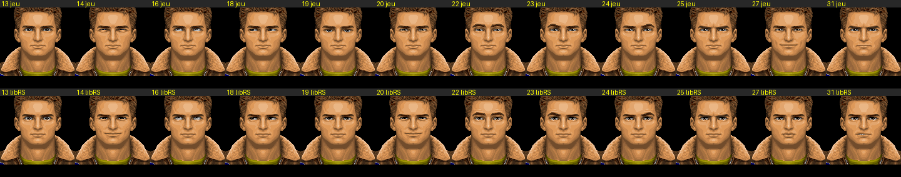
En haut le jeu, en bas la table actuelle de SCConvPlayer.cpp, pour chaque
valeur employée avec billy. Écarts visibles à 14, 19, 20, 27 et 31.
Octet
Image du jeu
Images de libRealSpace
À l'écran
Répliques
Entrée corrigée
13
13 (yeux)
13
conforme
32
1, 14, bouche, 2, 35
14
14 (yeux)
20 et 27 (sourire)
sourire en trop, autre regard
87
1, 15, bouche, 2, 35
16
16 (yeux)
16
conforme
19
1, 17, bouche, 2, 35
17
17 (yeux)
17
conforme
21
1, 18, bouche, 2, 35
18
18 (yeux)
18
conforme
21
1, 19, bouche, 2, 35
19
19 (yeux)
aucune
visage neutre
80
1, 20, bouche, 2, 35
20
20 (yeux)
20 et 27 (sourire)
sourire en trop
14
1, 21, bouche, 2, 35
21
21 (yeux)
20 et 27 (sourire)
autre regard, sourire en trop
16
1, 22, bouche, 2, 35
22
22 (sourcils)
22
conforme
296
1, 23, bouche, 2, 35
23
23 (sourcil)
23
conforme
66
1, 24, bouche, 2, 35
24
24 (sourcil)
24
conforme
75
1, 25, bouche, 2, 35
25
25 (froncés)
25
conforme
431
1, 26, bouche, 2, 35
27
27 (sourire)
26 (bouche)
autre bouche, sans sourire
16
1, 28, bouche, 2, 35
28
28 (grand sourire)
27 (sourire)
sourire au lieu du grand sourire
1
1, 29, bouche, 2, 35
31
31 (sourcils et bouche)
30
autre expression
42
1, 32, bouche, 2, 35
255
aucune
aucune
conforme
500
1, bouche, 2, 35
En tout, 256 répliques sur 1 717 n'ont pas la même expression que dans le jeu. Table complète
corrigée, compilée : tools/conv_ref/faces_shape.cpp (la bouche a sa place,
kFaceMouthSlot, entre l'expression et la coiffure).
Autres points, gros plan
Ordre des couches : libRealSpace dessine la bouche par-dessus les habits ; dans le jeu elle
passe avant la coiffure et les habits.
Clignement : image 12 une fois sur 30 à chaque image de scène si l'octet vaut 20 au plus ou 255 ; absent de libRealSpace.
Bouche : libRealSpace fait tourner les bouches sur l'horloge ; le jeu lit le texte avec les règles
du § 6 (code de référence tools/conv_ref/conv_lips.cpp).
Image vide (visages incomplets) : ne rien dessiner, ce n'est pas un écart.
Accept / Reject : l'image 53 remplace l'image des yeux au lieu d'être ajoutée ; une seule zone
« Accept » (x 118 à 279, y 113 à 199).
Lecture du script
Format testé avant de parser (ConvData::detectFormat) : sur le premier texte, une
première chaîne en forme d'identifiant de voix (vide, ou 1 à 8 lettres ou chiffres) et une suite d'octets valide
→ CD ; sinon disquette. 241 / 241 justes dans chaque format, au lieu des 29 erreurs de la détection texte
par texte sur le CD.
Une boucle de premier niveau, un sous-parseur par commande (tools/conv_ref/conv_parser.cpp) ;
un octet qui n'est pas une commande est une erreur de parsing. 224 n'est pas une commande : c'est une
couleur de texte, lue à la place d'une commande après un décalage.
Champs : x, y de GROUP_SHOT_ADD_CHARACTER et de CLOSEUP sont des mots signés
petit-boutistes ; YESNOCHOICE_BRANCH1 et YESNOCHOICE_BRANCH2 ont un mot.
Décor : 5 octets par élément de BACK, le mot signé y donne la position (0, y + 24).
Scène de groupe
Les positions des figures appartiennent à la scène (la même figure a plusieurs positions selon les scripts).
Toutes les figures de la scène restent dessinées pendant toutes ses répliques (disquette) ; dans la
version CD, chaque personnage qui parle apparaît à sa première réplique.
Figurant : image 0 seule ; palette PFIG du premier figurant seulement.
Texte
Remplacer chaque occurrence des codes $ ; ajouter $L, $O, $A, $B, $P, $T.
Lignes de 30 caractères au plus, coupées aux espaces, à y = 156 + 15 × n.
—
Outils
Outil
Rôle
tools/conv_dump.py
affiche les scripts de CONV.PAK
tools/conv_scene.py
compose une scène de groupe → PNG
tools/conv_faces.py
planche des 62 images d'un visage, compositions, comparaison avec faces_shape, tableau des images présentes
tools/conv_doc_images.py
toutes les images de cette page
tools/conv_ref/
code de référence C++ : parseur, lèvres et clignement, faces_shape corrigée
python3 tools/conv_doc_images.py --donnees <BIGTRE.TRE ou DATA> analysis/conv_images